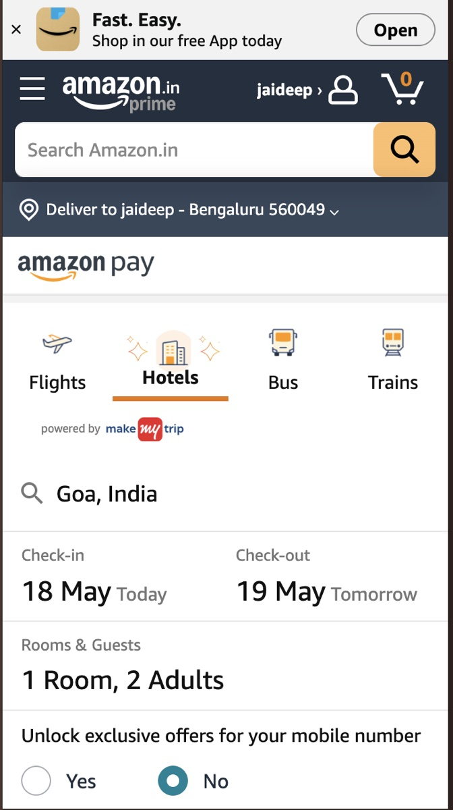
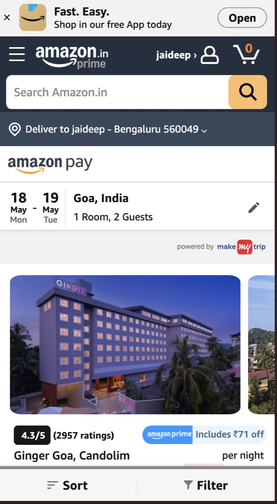
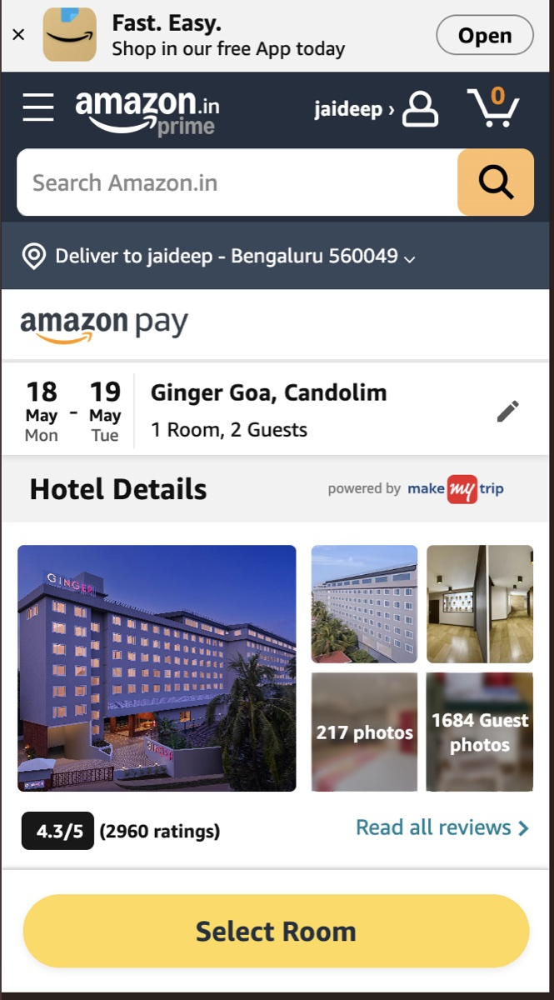
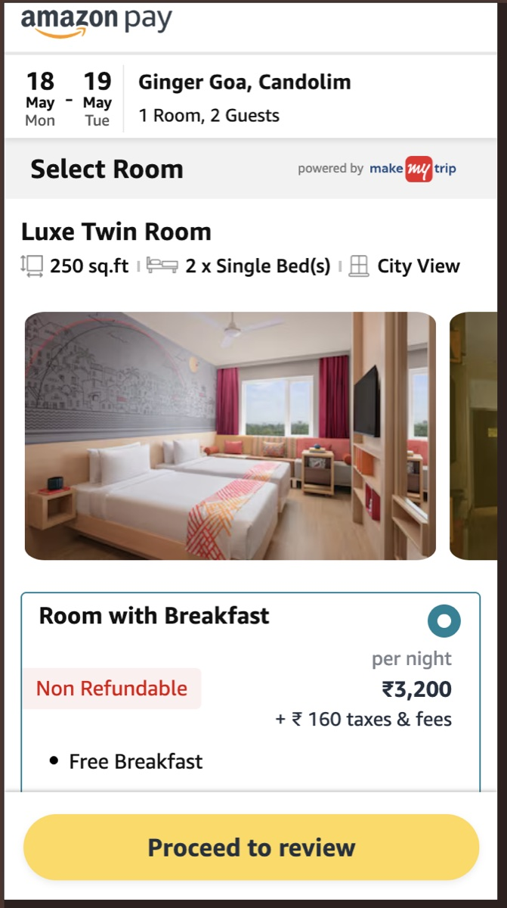
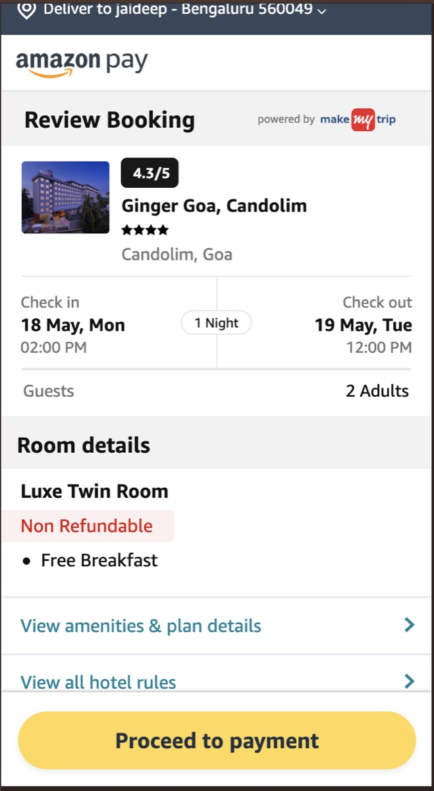

Jaideep Mala
Senior Backend Engineer • 8+ YOE • Ex-Amazon, Goldman Sachs, Samsung
8+
Years Experience
Millions
Users Served
AWS
Cloud Expertise
🚀 What I Do
⚡ Projects
Restaurant POS SaaS
A browser-based point-of-sale platform for restaurants with live order flow, menu management, kitchen operations, role-based access, configurable billing, and multi-tenant foundations. This is the main product build: Vercel frontend, Render backend, MongoDB Atlas, realtime order updates, and a production domain at pos.jaideepmala.com.


AI-Powered Autonomous Development Workflow
I built a complete agent workflow around this POS product to raise features, fixes, and product improvements from a simple Telegram request. A Codex-powered agent creates a branch, edits the frontend/backend codebase, runs checks, performs an AI review pass, raises a GitHub PR, and returns approval controls back to Telegram.
Private Telegram bot accepts product requests, returns job IDs, and shows approval actions.
Local Node.js controller manages jobs, repo paths, Git branches, logs, status, and dashboard state.
Codex runs as the coding agent, reads the repository, applies changes, and summarizes its work.
The workflow runs backend checks plus frontend lint/build before a PR is considered ready.
A reviewer pass inspects the diff for bugs, missing validation, regressions, and required fixes.
The bot pushes the branch, opens a draft PR, comments the agent summary, and waits for approval.
Built as a real product path: frontend → API → database, then extended with staff roles, realtime updates, restaurant-specific settings, and a working AI-assisted PR workflow with background jobs, live logs, AI review, and human-in-the-loop merge approval.
Hotel Booking Platform
A mobile-first hotel booking journey covering search, hotel discovery, room selection, review, and payment handoff — shaped for high-intent conversion and smooth travel-commerce flows.





End-to-end booking flow from intent capture to room choice and checkout review.
🧠 Skills
I build complete AI-powered development workflows that connect product requests, coding agents, repositories, automated checks, AI review, and pull request approval into one working delivery system.
📬 Contact
Email: jaideep.mala.personel@gmail.com
GitHub: github.com/jaideepmala
LinkedIn: linkedin.com/in/jaideep-mala